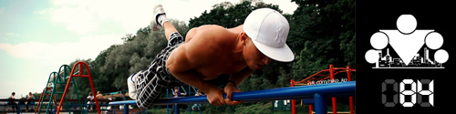

100 Дневный воркаут
<==== Вернуться к оглавлению
День 84. Потребление vs. Созидание

Памятка:
Последний день тренировочной недели, как и всегда, мы посвящаем
развитию гибкости и растяжке
. Если кому-то это кажется скучным или ненужным, то поверьте мне, только тот, кто давно не растягивался и потерял гибкость, сможет по-настоящему оценить важность этого занятия ;)
Поскольку вся следующая неделя будет посвящена исключительно тренировочному процессу, то сегодня я решил поговорить о том, как мы вообще проводим своё свободное время.
Несколько лет тому назад, когда я ещё только учился в университете на 2-ом курсе, я находился в довольно непростой (в плане учёбы) ситуации. Пропустим тот факт, что мне повезло закончить школу без троек и с горем пополам поступить, но воркаута тогда не было, свободного времени было много, а учился я не ахти как. И хотя я смог закончить первый курс на уровне среднего студента, но к середине второго всё яснее становилась необходимость восполнения недостающего запаса фундаментальных знаний по ключевым дисциплинам, да и вообще знаний в тех областях, которые нам преподавали.
Тут стоит сделать лирическое отступление. На мой взгляд процесс обучения в высшем учебном заведении безумно просто, потому что всё что требуется от студента - это знать ответы на все вопросы, представленные в билетах. Только и всего. Если экзамен идёт по билетам (а в 90% так оно и есть), то сдать его не должно быть проблем, поскольку можно подготовиться заранее. Вообще публикация списка вопросов перед экзаменом это такой кард бланш для учащихся, что я до сих пор не понимаю, почему многие им не пользуются.
Вернемся к середине второго курса. Так совпало, что мне одновременно подарили гантельки (которые я даже немного использовал, пока не травмировал локоть и не оставил их навсегда пылиться в углу) и книжку Джона Адайра "Искусство управлять людьми и самим собой" (прекрасная вещь, с которой и начался мой путь самосовершенствования). Примерно в это же время я где-то прочитал, что основатель компании ИКЕА любит разделять весь свой день на небольшие отрезки времени, чтобы повысить свою производительность. Дословно его совет звучит так:
"Если вы разобьете свой день на десятиминутные отрезки и попытаетесь провести их с пользой, то будете поражены тем, сколько всего вы сможете сделать."
- Ингвар Кампрад, основатель компании ИКЕА, (состояние $23 млрд.)
Меня эта мысль зацепила, но я понял, что 10 минут это слишком мало и решил разбить свой день на часовые отрезки (60 минут), для чего даже специально купил себе таймер в виде курицы (возможно даже в той самой ИКЕИ). Таким образом я смог контролировать свои занятия и каждый час менять вид деятельности. На тот момент моей главной задачей было догнать своих одногруппников, поэтому в основном я чередовал дисциплины, которые изучал. Выглядело это как-то вроде:
1 час - чтение учебника по Психологии
1 час - тренировки
1 час - отдых
1 час - чтение учебника по Эконометрике
И т.д. Развлечений у меня тогда почти не было, гулять я не любил, а с людьми особо не общался. Так что мог полностью сконцентрироваться на поставленной задаче.
Однако весь приведенный выше текст - это не более чем предыстория к теме сегодняшнего инфо-поста. Дело в том, что спустя какое-то время такого режима я понял, что фактически занимаюсь только потреблением того, что было создано людьми до меня, но, в свою очередь, ничего не создаю для других. И это было словно гром среди ясного неба. Я осознал, что нужно не только потреблять, но так же и созидать. Когда я говорю о созидании, я не имею в виду сразу какие-то глобальные вещи, нет, я говорю о тех вещах, которые может создавать каждый из нас. Особенно легко это даётся в тех областях, которые нам действительно нравятся (весь секрет в том, чтобы найти такие области). Самый простой способ создавать что-то, а проще всего создавать информацию - завести блог в интернете. Например вы интересуетесь радио электроникой или даже можете собрать бумбокс. Напишите об этом! Вы можете удивиться, но в мире очень много людей со схожими интересами, которые наверняка ищут эту информацию, которой пока нет. Или, например, вы любите играть во все новинки выходящие в Google Play или AppStore. Почему бы не начать писать мини рецензии и отзывы, которые могут помочь другим людям определиться с выбором.
Я хочу сказать, что мы живём в такое время, когда, с одной стороны, информационная волна просто накрывает нас с головой, а с другой, очень сложно найти источники действительно полезной и релевантной информации. Посчитайте сами, сколько в интернете сайтов по фитнесу и так называемых гуру экспертов с их методикамй А сколько из них действительно можно назвать полезнымй
Более того, сложившаяся ситуация уже предоставляет огромное количество возможностей для создания контента, а не только его потребления. Это раньше, единственный вариант заключался в создании сайта и ожидании, когда его найдут первые участники. Появление социальных сетей перевернуло интернет с ног на голову и теперь о действительно интересных вещах мгновенно узнают сотни тысяч людей по всему миру. Хотите ещё пример? Instagramm (это такая социальная сеть с очень ограниченными возможностями, где каждый может публиковать свои фотографии) + любовь к кулинарии = фото блог с рецептами различных блюд и, кто знает, может быть у вас действительно есть нераскрытый талант шеф-повара?
В самой природе человека заложено стремление к творчеству и созиданию. Именно осмысленный труд сделал из обезьяны человека (я в этом вопросе склонен придерживаться эволюционной теории Ч. Дарвина), и именно благодаря тем людям, которые всё время что-то создавали (читай изобретателям) мы живём в том мире, в котором мы живём. Да, наш мир несовершенен и в нём ещё огромное количество проблем, но, на мой взгляд, он гораздо лучше, чем был раньше, а существующие проблемы - это не более чем вызовы лично вам!
P.S. А ещё говорят, что лучший способ в чём-нибудь разобраться - попробовать объяснить это другим людям. Поверьте мне, это действительно так
======> День 85. Воркаут Фристайл